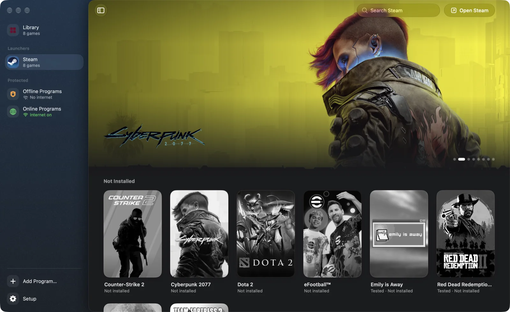
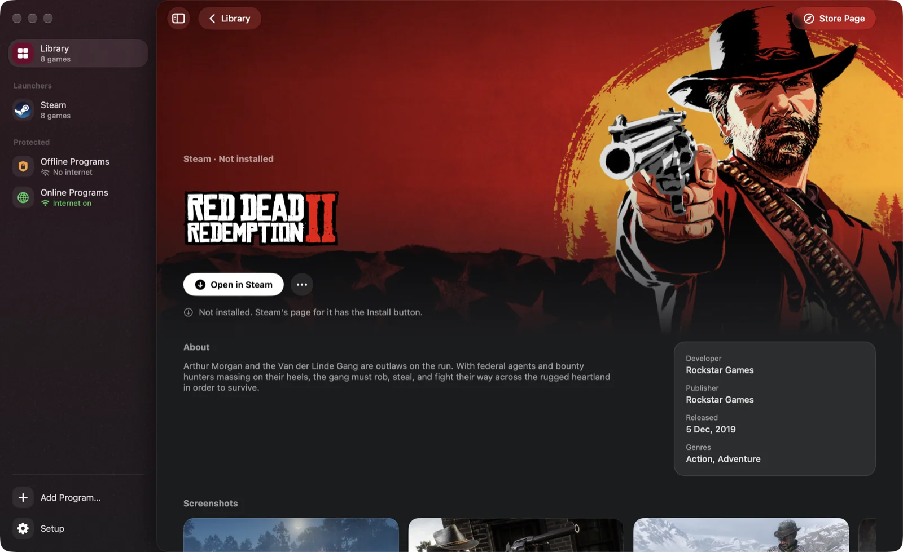
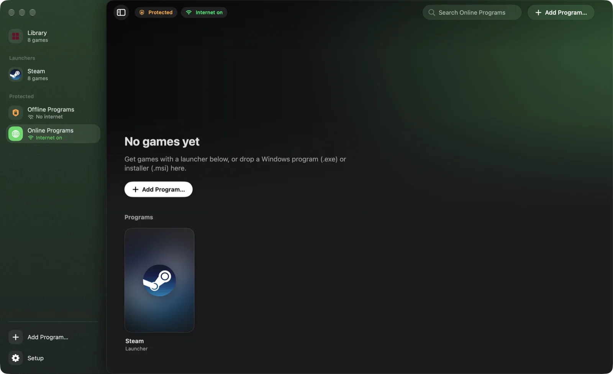

Free and open source · GPL-3.0
Windows games on your Mac.
Corkscrew runs Windows games and launchers on Apple Silicon. It builds its own Wine, picks the graphics layer per game, installs programs from a .zip, .rar, .7z or .iso in one click, and can run programs you don’t trust in a sandbox.
$ curl -fsSL https://prateek-srivastav.github.io/corkscrew/install.sh | bash
Paste it into Terminal. It downloads the latest release, checks its SHA-256, puts Corkscrew in Applications and opens it. Run it again to update. Read the script
- Mac
- Apple Silicon
- macOS
- 26 or 27
- Download
- About 320 MB
- Disk
- 3.5 GB + your games
- License
- GPL-3.0

What it does
A native SwiftUI app around CodeWeavers’ open-source Wine, built for Apple Silicon and tuned for games.
D3DMetal · DXMT · DXVK · WineD3D
Graphics per game
D3DMetal from Apple’s Game Porting Toolkit, DXMT, DXVK with MoltenVK, or WineD3D. Corkscrew picks one; you can switch per game.
DLSS → MetalFX
MetalFX upscaling
Turn on a game’s DLSS option and it runs on MetalFX. Retina mode, the Metal HUD and a performance overlay are a toggle away.
Steam · Rockstar Games Launcher
Steam and Rockstar
Steam installs, signs in, downloads and launches games, which show up in the Library on their own. The Rockstar Games Launcher works too.
macOS sandbox
Sandboxed bottles
Isolated bottles run in a macOS sandbox: no access to your files, keychain or clipboard, and no internet unless you turn it on.
msync · Game Mode
Tuned for speed
msync, Game Mode for fullscreen games, Wine debug output off, and background shader compiles.
SDL2
Controllers
Xbox controllers work in every tested game, through Wine’s SDL2 support.
From your game down to the GPU
- Corkscrew.appThe SwiftUI app, and gamecore-cli for Terminal.
- GameCoreReads the program’s .exe, picks the graphics layer, and runs bottles, the sandbox and launches.
- winecx 26.3CodeWeavers’ open-source Wine, built for x86_64 and run under Rosetta 2.
- D3DMetal · DXMT · DXVK · WineD3DTranslate the game’s Direct3D calls, chosen per launch.
- MetalApple’s graphics API, on your Mac’s GPU.



One-click install from a download
Got a program as a .zip, .rar, .7z or .iso? Drop it on Corkscrew and click Install. Corkscrew unpacks it into a bottle, puts a disc image in the drive, runs the setup and adds the program to your Library. You don’t need an unpacking app or Terminal.
- .zip
- .rar
- .7z
- .iso
- .tar.gz
- .part1.rar
- .r00
- .7z.001
- Drop the download on CorkscrewDrag it onto the window, use Add Program… (⌘O), or pick Corkscrew in Finder’s Open With menu. For a split download, pick any part.
- Click InstallChoose the bottle, and Copy to keep your file or Move to delete it after unpacking and save the space.
- Corkscrew unpacks itInto the bottle, with the unpacker built into macOS. A disc image goes into the bottle’s D: drive, like a DVD. Big downloads take a while: click Hide and Corkscrew keeps going.
- Run the setupClick Run Setup and follow its steps. Keep the install folder it suggests.
- Add it to your LibraryWhen the setup closes, Corkscrew shows the program it installed. Click Add to Library. It deletes the setup files and ejects the disc.
If the download is the program itself, with no setup, Corkscrew skips the setup and adds it to your Library. Password-protected archives and split zips (.z01) don’t work yet.
Your file stays where it is. Corkscrew unpacks what’s inside into the bottle, so you need room for both.
Corkscrew deletes your file as soon as it’s unpacked, to free the space. To install again, you’d need to download it again.
412 GB free. Unpacking needs about 21.6 GB, and the installed program about as much again.
Tested games
On a 14″ MacBook Pro (M4, 16 GB, macOS 27). Reports for other games are welcome.
| Game | Setup | Result |
|---|---|---|
| Red Dead Redemption 2 | Steam → Rockstar Games Launcher, DX12 on D3DMetal | About 50 FPS with Ultra textures, High shadows and lighting, DLSS as MetalFX. |
| Black Myth: Wukong Benchmark Tool | Steam, DX12 + MetalFX on D3DMetal | 50 FPS average at 1512×982 (Medium, MetalFX 59%). |
| God of War (2018) | Isolated bottle, internet off, DX11 on D3DMetal with a depth-test fix | Plays on the Ultra preset. |
| Last Pirates Die Together | Isolated bottle, internet on, its own Steam, DX11 on D3DMetal | Plays; online co-op works. |
| Emily is Away | 32-bit, DX11 on DXVK | Runs. |
Install
You need an Apple Silicon Mac with macOS 26 or 27.
-
Run the install command in Terminal. It downloads about 320 MB, puts Corkscrew in Applications and opens it.
$ curl -fsSL https://prateek-srivastav.github.io/corkscrew/install.sh | bash -
Click Set Up Corkscrew. It installs Rosetta if needed, unpacks the Wine runtime that comes inside the app, and creates a Steam bottle and two protected bottles.
-
Open Steam from the Library, sign in, and install your games. Or drop in a program you downloaded as a .zip, .rar, .7z or .iso.
To remove everything, use Settings → Clean Up and Uninstall. To build from source, see the README.